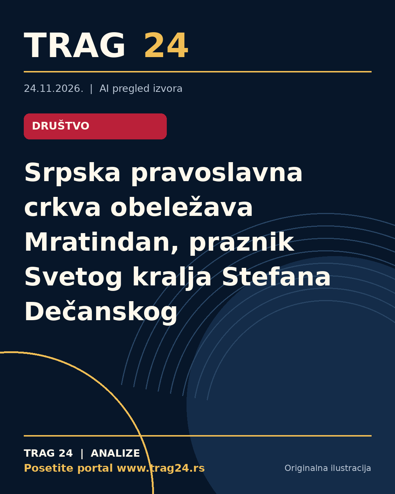

Srpska pravoslavna crkva obeležava Mratindan, praznik Svetog kralja Stefana Dečanskog

ŠTA SE DOGODILO
Srpska pravoslavna crkva danas obeležava praznik Svetog kralja Stefana Dečanskog, poznat kao Mratindan. Ovaj praznik ima veliki značaj za vernike, naročito Srbe sa Kosova i Metohije, koji često ističu da svoj opstanak duguju upravo ovom svecu. Stefan Dečanski je poznat po podizanju manastira Visoki Dečani, jedne od najvažnijih srpskih srednjovekovnih svetinja koje predstavljaju značajni duhovni i kulturni spomenik.
HRONOLOGIJA
Događaji oko obeležavanja ovog praznika pratili su liturgije i molitvene svečanosti koje je predvodio patrijarh Porfirije. On je prethodnih dana učestvovao i u molitvenim događajima povodom 80. rođendana patrijarha Kirila. U narodu se Mratindan veže i za tradicije postavljanja slamskog žita kao deo verskih običaja, a takođe se u crkvenim obredima koristi kadjenje u cilju prizivanja Božje blagodati i duhovnog mira.
ŠTA NAVODE IZVORI
Izvor Euronews Srbija naglašava značaj Svetog kralja Stefana Dečanskog za Srbe na KiM, ističući da ovaj praznik ima i istorijsku i kulturnu težinu. Izvor Republika detaljnije opisuje verske običaje povezane sa praznikom, uključujući crkveno učenje i značaj molitve, kao i verske poruke patrijarha Porfirija. Takođe, Republika stavlja fokus na duhovna učenja i tradiciju povezanu sa svetim likovima i praznicima u pravoslavlju.
ŠTA JE POTVRĐENO
Potvrđeno je da Srpska pravoslavna crkva danas obeležava Mratindan u čast Svetog kralja Stefana Dečanskog, da je on podigao manastir Visoki Dečani i da je praznik veliki duhovni događaj za pravoslavne vernike. Takođe, poznato je da se liturgije i molitvene svečanosti održavaju širom Srbije, uključujući i patrijarhove službe i propovednike koji prenose poruke vere i zajedništva.
ŠTA NIJE POTVRĐENO
Nema potvrđenih podataka o bilo kakvim političkim ili društvenim sukobima direktno vezanim za sam praznik Mratindan. Takođe nisu potvrđene spekulacije ili privatne informacije o životima sveštenika ili drugih učesnika u proslavi koje su možda iznete u nekim izvorima ili medijima.
ŠTA OSTАJE OTVORENO: Otvoreno je pitanje kako će se buduće generacije Srba, naročito na teritorijama sa složenim političkim okruženjem, odnositi prema ovom prazniku i koliki će biti njegov uticaj na očuvanje kulturnog i duhovnog nasleđa. Takođe, ostaje da se prati dalji odnos državnih i crkvenih institucija prema zaštiti pravoslavnih svetinja iz srednjeg veka, uključujući one koje je podigao Stefan Dečanski.
Izvori
- https://www.euronews.rs/srbija/drustvo/253318/danas-je-mratindan-praznik-svetog-kralja-stefana-decanskog/vest
- https://www.republika.rs/vesti/drustvo/785091/sveti-mucenik-stefan-decanski-mratindan-2026
Ova analiza je pripremljena uz pomoć veštačke inteligencije na osnovu javno dostupnih izvora. Navodi izvora nisu nužno nezavisno potvrđeni.